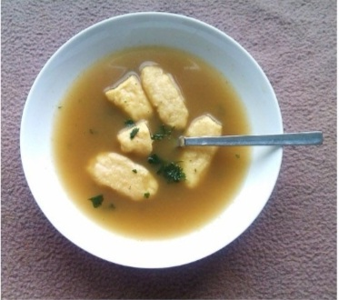

Granny Dornak's Comforting Tharanke (Czech Dumpling Soup)
Whether you're feeling down, it's cold outside, or you want a quick simple meal for the family, what's better than some comfort food?

Ingredients
- 4 chicken bouillon cubes
- 4-6 eggs, room temperature
- 1 cup rice, washed
- Salt
- Flour
Instructions
- Boil bouillon cubes in a stew pot 3/4 full.
- Meanwhile, whisk eggs with a little salt (no more than 1/4 tsp) and flour by the 1/4 cup until you have a thick dumpling batter. (It should drip off the spoon.)
- Drop dough into the boiling water by spoonfuls. Add water as needed.
- Turn the fire low. Add rice. Stir and simmer for another 10 minutes or until rice is fully cooked.
Tip!
If you want something even more filling, use egg noodles instead of rice!